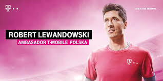
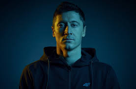

W 2013 podpisał kontrakt z koncernem Nike, który został sponsorem jego wyposażenia sportowego – występuje w obuwiu linii Hypervenom i Phantom. Wraz z Leo Messim znalazł się na okładkach polskich wersji gier FIFA 14 i FIFA 15. W 2016 na platformy Android i iOS wydana została gra Lewandowski: Euro Star 2016. W grze FIFA 18 pojawiła się cieszynka Lewandowskiego, ręce skrzyżowane w kształt litery „X” i palce wskazujące skierowane ku górze. W grze FIFA 20 otrzymał najlepszą możliwą kartę w grze z oceną ogólną 99. Znalazł się w drużynie roku FIFA 21. Współpracuje reklamowo z koncernem Procter & Gamble, od 2011 był jedną z twarzy marki Gillette. W 2018, kiedy współpraca dobiegła końca, Lewandowski po raz pierwszy od dawna zaprezentował się publicznie w zaroście, czego zakazywał kontrakt z firmą. Do współpracy z Gillette powrócił w 2020. Od 2016 jest jedną z twarzy kampanii reklamowej Head & Shoulders. Reklamował także firmę Panasonic oraz T-Mobile.  Od 2015 współpracuje z marką Huawei, a w 2020 został ambasadorem marki na Europę. Współpracował reklamowo z koncernem Coca-Cola, następnie został międzynarodowym ambasadorem marketingowym firmy Oshee Polska, produkującej napoje izotoniczne. Współpracował także m.in. z firmą Vistula. W 2018 podpisał międzynarodowy kontrakt z Lagardere Sports, jedną z największych agencji marketingowych działających w sferze sportu i rozrywki. W 2021 został ambasadorem marki 4F, polskiego producenta odzieży i akcesoriów sportowych.  Lewandowski jest najpopularniejszym Polakiem w social mediach. W serwisach Facebook, Twitter i Instagram śledzi go łącznie ponad 28 mln ludzi. W 2020 założył konto w serwisie TikTok, a jego aktywność na tej platformie była komentowana przez opinię publiczną. W czerwcu 2020 niemiecki "Sport Bild" poinformował, że Lewandowski za publikację jednego sponsorowanego posta na Instagramie może otrzymywać nawet 85 tys. euro.